Sustainability is a subject that is close to our hearts. Since our inception in 2011, we've been trying
to reduce our environmental footprint by making greener decisions.
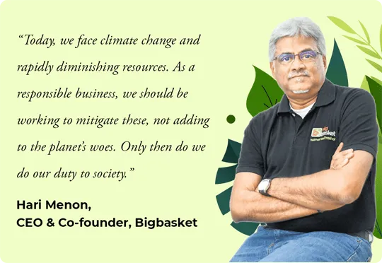
Today, we want to share some of the green milestones we hit in 2021. By choosing us again and again for your
grocery & home needs, you have helped us achieve these numbers. Thank you, we couldn't have done it without
you!
6 Key Initiatives
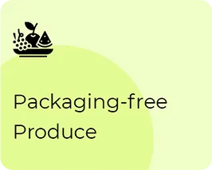
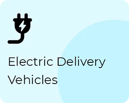
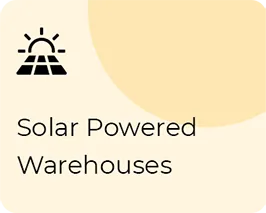
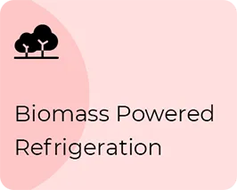
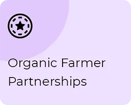
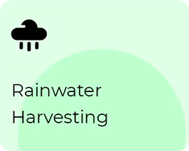
#1
Electric Delivery Vehicles
3,637 tonnes of CO2 saved by our fleet of 2,234 electric delivery vehicles
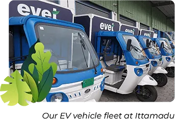
We launched our first EVs back in 2016, long before they became a buzzword, with a pilot of 10 electric
delivery vans in Noida. Many trials and challenges later, our fleet today has 1,623 electric bikes and
611
electric vans. We’ve enabled 70 delivery hubs across 6 Tier-1 cities with ~939 EV charging
facilities.
Today, EVs form 30%+ of our delivery fleet and our goal is to hit 70% before the end of 2024. In
2021, we
had the highest number of electric delivery vehicles among all Indian ecommerce players.
Why are EVs better?
Petrol and diesel vehicles emit CO2, which is a ‘greenhouse gas’ that causes air pollution and
leads to global warming. Trees, by taking in CO2 for photosynthesis, mitigate this effect.
However, 1 tree can digest just 22kgs of CO2 in a year!
By using electric vehicles, we have reduced CO2 production by 3,637 tonnes in 2021 alone,
which
would have required 1,323 acres of greenery or 1,50,822 trees to neutralise. That
is a green
space 4.4x the size of Cubbon Park or 14.9x of Lodhi Garden.
Tonnes of packaging waste ends up in landfills every year, damaging soil quality. For years, we have been
reducing our footprint here by minimising packaging, substituting more eco-friendly materials, and now,
doing away with it altogether.
2011
Bring deliveries in reusable
crates, not disposable bags, thus reducing waste.
2015
Replaced plastic bags with
compostable cornstarch bags.
2017
Reduced packaging and moved 90% to
paper bags as wherever possible.
2021
Launched pilot of 100%
packaging-free delivery of fruits & vegetables.
2023
Our goal is to switch to zero
packaging for fruits & veggies pan India by 2023.
In spite of Covid-related delays, our pilot for this was rolled out successfully with delivery partners
bringing fruits and vegetables in reusable carry bags and transferring them to customers’ storage bags.
Thanks to you for welcoming this move wholeheartedly in spite of the slight extra effort involved! We plan
to roll this out pan-India by 2023.
#3
Solar Powered Warehouses
36,94,089 kWp of solar power generated in 2021 alone
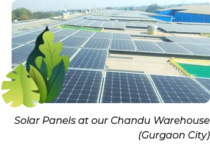
Solar power has vast potential in a sunny country like India. We started tapping it for our warehouse needs
as far back as 2016, with solar panels installed on the roof of one of our Bangalore delivery
centres.
Today, we have 4,363kWp panels installed atop 28 warehouses in 9 cities. Together, these generated
36,94,089kWp in 2021 alone, reducing our CO2 emissions by 1,290 tonnes. For perspective, this is the
daily
power consumed by 4.5 lakh+ households (8 kWh/day) in India. Many of our warehouses also turned
energy-positive, giving 3,51,807 kilowatt hours of power back to the grid in 2021.
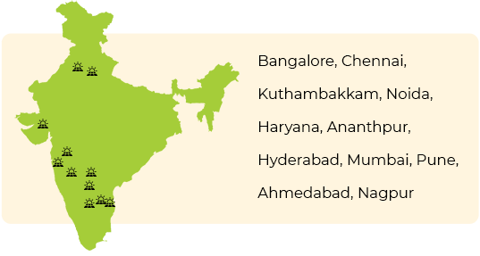
#4
Biomass Powered Refrigeration
90% reduction in electricity consumption through biomass-fuelled
cooling
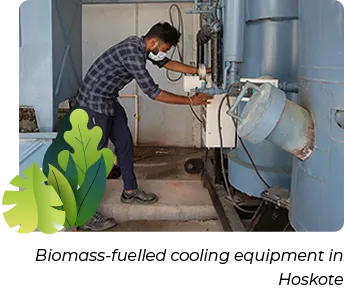
Fruits, vegetables, dairy, meat… to keep these perishables fresh for you, we need cold rooms for storage.
Unfortunately, conventional cooling systems not only run on fossil fuels and emit greenhouse gases but are
also energy inefficient.
To find a solution, we partnered with the World Bank’s TechEmerge program that connects organisations with
innovators. And on 1st January 2021, we installed GreenCHILL, our first biomass-fueled chilling
system, in
Bangalore, in partnership with New Leaf Dynamic Technologies.
When any natural plant-based material dies and decays, it releases CO2 back into the atmosphere. GreenCHILL
uses this biomass to generate power. These energy-efficient coolers use biowaste such as cashew
shells and
coconut husk as fuel and consume just 8 units/day of electricity compared to the 90 units/day that a
conventional cooling system uses. So far, we’ve established 9 GreenCHILL units, saving 186 tonnes of CO2
per
year!
Our collection centres and cold rooms are located close in proximity. This way, food can be
transported quickly, reducing perishable food wastage.
#5
Organic Farmer Partnerships
Long-term partnerships with 1200+ organic farmers
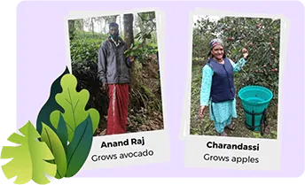
Prolonged use of chemicals strips soil of its fertility, whereas organic farming is gentler and more
sustainable. Our vision is to go 100% organic in the next few years and we've developed long-term
relationships with thousands of farmers who share our commitment.
We support them through initiatives such as field geotagging, offering agri intelligence on weather, soil &
growing conditions, and organizing knowledge sessions on the latest farming techniques, government schemes,
and more. We've been awarded multiple times at Jaivik India for our direct farmer linkages.
We have a large collection of eco-friendly home care products including floor cleaners, laundry
wash, and dishwash. These are gentle on you and on the planet too. See the range here.
#6
Rainwater Harvesting
3,90,000 litres of rainwater harvested per year
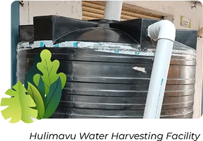
Rainwater that goes uncollected is, at best, wasted, and at worst, a cause for flooding in congested cities.
We have established rainwater harvesting systems of different capacities in 9 of our warehouses located in
areas that receive good rainfall through the year.. On average, just 1 hour of rainfall lets us collect
27,000 litres of water, which is sufficient to support the needs of one warehouse for over 5 days!
Going greener, one step at time
There is a beautiful saying in sustainability circles — real change happens not when a hundred people are
perfectly sustainable but when a million of us attempt to be sustainable, however imperfectly. Thank you for
always supporting us!
As we continue on this green journey, we promise you one thing: an unwavering commitment to move the needle
on sustainability. We will keep trying, learning, and doing better every year.